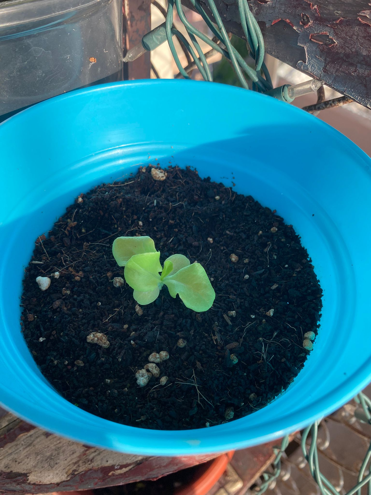

Lechuga del País / Black Seeded Simpson
Lechuga de hojas tiernas y sabor suave, perfecta para ensaladas frescas. Crece rápido y se adapta muy bien a cultivos continuos.
Ver detallesDescubre mi colección de plantas cuidadosamente cultivadas. Desde hierbas aromáticas hasta flores exóticas, cada planta tiene su propia historia y características especiales. Acompáñame en este viaje verde.

Cada planta de mi huerto ha sido seleccionada y cuidada con amor. Haz clic en cualquier planta para conocer más sobre sus cuidados y características.
Lechuga de hojas tiernas y sabor suave, perfecta para ensaladas frescas. Crece rápido y se adapta muy bien a cultivos continuos.
Ver detalles
Tomatitos dulces y jugosos, ideales para picar o dar color a las ensaladas. Planta productiva y fácil de cuidar en macetas o huertos.
Ver detalles
Flor de pétalos rosados que atrae mariposas y abejas. Alegre y resistente, florece abundantemente durante el verano.
Ver detalles
Planta carnívora de aspecto exótico, con jarritas que atrapan insectos. Además de ornamental, aporta un toque único y sorprendente al jardín.
Ver detalles
Hierba aromática de sabor fresco y cítrico, indispensable en la cocina. Crece rápido y agradece riego constante.
Ver detallesHierba verde de aroma intenso y versátil en la cocina. Fácil de cultivar en macetas o en el huerto, siempre lista para dar sabor.
Ver detalles
Mezcla floral perenne que llena de color y vida el jardín año tras año. Atrae polinizadores y crea un ambiente natural y vibrante.
Ver detalles